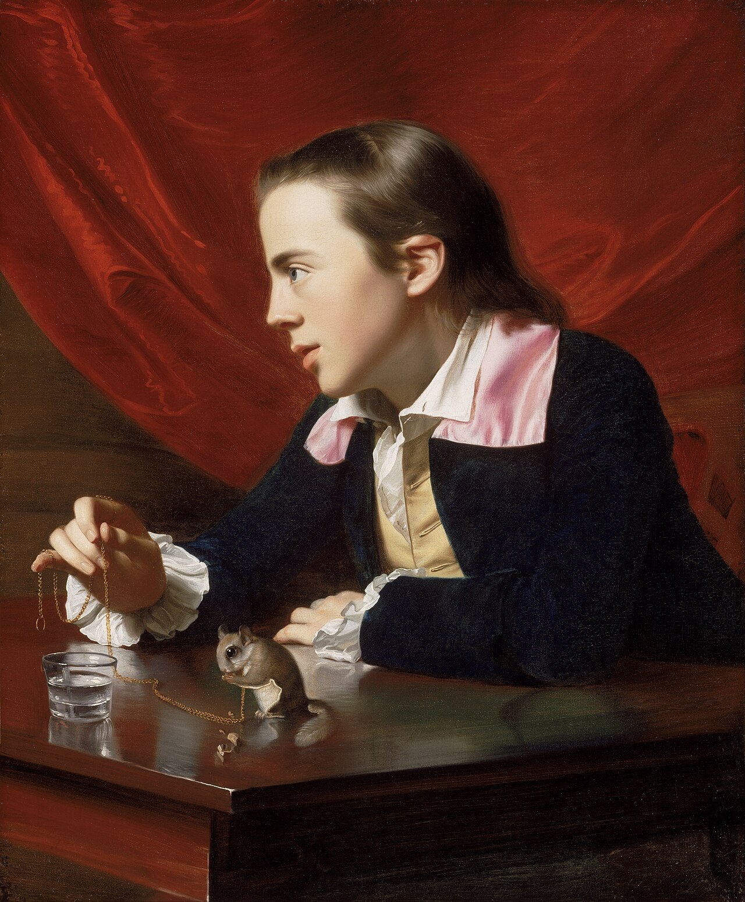
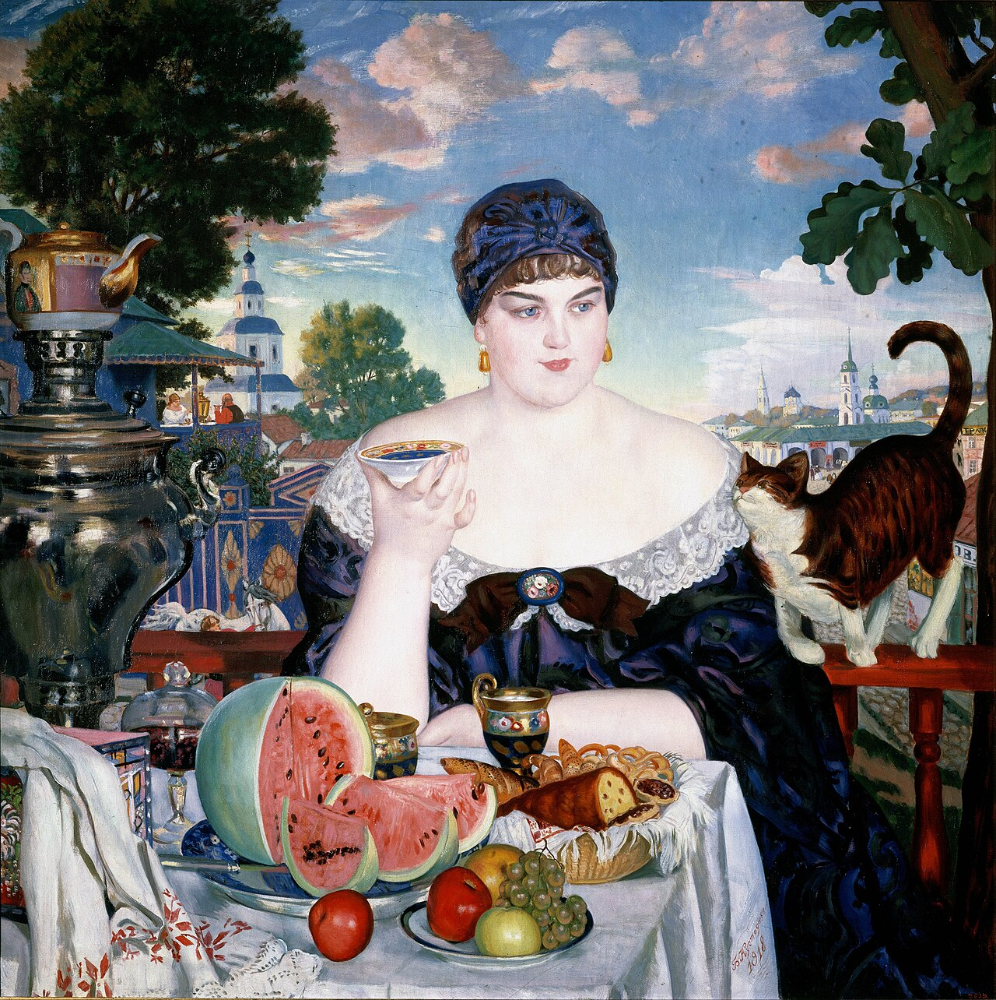

Есть цифра, которая многое объясняет. Исследователи Лиза и Джеффри Смит замеряли, сколько времени человек проводит у одной работы в Метрополитен-музее. Получилось 27 секунд в среднем, а медиана — 17. Рекорд за всё наблюдение — три минуты сорок восемь секунд, и то у Рембрандта. Через пятнадцать лет они повторили исследование: ничего не изменилось.
Для сравнения: на веб-странице средний читатель проводит 15 секунд. То есть на картину, которую писали год, мы смотрим примерно как на пост в ленте.
Это не про невнимательность. Нас просто никто не учил смотреть. Мы умеем читать текст, дослушивать музыку, досматривать фильм — а с картиной обходимся как с вывеской: считали, что нарисовано, и дальше.
Три часа перед одной картиной
В Гарварде есть профессор истории искусства Дженнифер Робертс. Первое задание на её курсе всегда одинаковое и вызывает у студентов стон: выбрать одну работу в музее и просидеть перед ней три часа. Без телефона, без перерывов на кофе. Только смотреть и записывать, как меняются наблюдения.
Три часа выбраны намеренно — Робертс знает, что это мучительно долго, и в этом весь смысл.
Она проделала упражнение сама, с картиной Копли «Мальчик с белкой». Девять минут ушло на то, чтобы заметить: форма уха мальчика точно повторяет очертания белого меха на животе белки — художник связывал человеческое и животное. Двадцать одна минута — чтобы увидеть, что пальцы, держащие цепочку, ровно совпадают с диаметром стакана воды.

Её главная фраза: то, что вы на что-то посмотрели, не значит, что вы это увидели.
Почему это работает
Первые минуты вы видите то, что уже знаете. Сюжет, узнаваемое: «а, это женщина с ребёнком». Мозг быстро назвал — задача выполнена, можно идти.
Вот здесь и надо остаться.
Потому что дальше, когда называть больше нечего, глаз начинает видеть по-настоящему: как положен мазок, что происходит в углу, куда ведёт свет, почему рука написана иначе, чем лицо. А следом подтягивается то, ради чего всё и затевалось — картина начинает вызывать что-то в вас. Не мысли о ней, а состояние.
Хорошая новость: три часа не обязательны. Музейные педагоги, которые работают с этим методом, говорят, что жёстких правил нет — эффект появляется и на пяти минутах, и на десяти, и на пятнадцати.
Как попробовать
Выберите одну работу. Поставьте таймер на десять минут и не уходите.
Сначала просто описывайте себе, что видите, без выводов: цвета, формы, куда идёт линия, где светлее, где темнее.
Потом заметьте, за что цепляется глаз и куда он возвращается. Что тянет обратно.
И только потом спросите себя — что я чувствую рядом с этим. Не «что художник хотел сказать», а что происходит со мной.
Первые три минуты покажутся вечностью. Дальше время пропадает.
Какую картину выбрать
Не самую знаменитую. У «Моны Лизы» вы будете смотреть не на картину, а на свои ожидания от неё — в Лувре на каждого человека приходится около пятидесяти секунд, и опрошенные называют этот опыт разочарованием. Берите то, о чём почти ничего не знаете.
Достаточно сложную, чтобы было что разглядывать. Много фигур, деталей, слоёв.
И главное: ту, которая зачем-то зацепила, но вы не понимаете чем. Не «нравится» — а «странно тянет». Это лучший критерий.
Куда пойти в Москве
Не на выставку-блокбастер: там толпа, очередь и ощущение, что надо успеть. Идите на постоянную экспозицию — тише, дешевле, и можно спокойно сесть.
Новая Третьяковка на Крымском Валу. Два предложения оттуда.
Шагал. «Над городом» — летящие над крышами двое. Смотреть на это легко и радостно, а при этом там много всего происходит по краям: домики, заборы, фигурки, из которых собран целый мир. Идеальный вариант для первого раза — не подвиг, а удовольствие.
Кустодиев. Его чаепития и купчихи — это праздник избыточности: самовары, арбузы, ткани, коты, купола. Всё цветёт и никуда не спешит. Такую картину невозможно охватить сразу, а разглядывать её приятно физически.

Это работает не только с картинами
Способность остаться с чем-то дольше, чем требует первый импульс, — редкий сегодня навык. Мы натренированы скользить: лента, вкладки, сторис, следующее видео.
Медленное смотрение возвращает то, что скольжение съедает: подробность, глубину, собственную реакцию.
Картина здесь — просто тренажёр. Учитесь смотреть на неё — начинаете иначе смотреть вообще.
Что почитать дальше
- Дженнифер Робертс, «The Power of Patience» — её собственный текст об упражнении, в Harvard Magazine.
- Shari Tishman, «Slow Looking: The Art of Immersive Learning» — базовая книга по методу, из гарвардского Project Zero.
- Оливер Бёркман, «Четыре тысячи недель» — глава об этом упражнении, откуда оно и разошлось широко.
Попробуйте на этой неделе один раз. Одна работа, десять минут. Короткую версию, чтобы просто взять и сделать, мы положили в раздел Практики. А захочется смотреть не в одиночку — приходите на арт-коучинг.
#практика #медленноесмотрение #какустроено #Третьяковка #Шагал #Кустодиев #современноеискусство #арткоучинг #МыДолжныБытьВоображаемы
![[Vi]](../assets/img/journal/emoji/znak_vi.png)